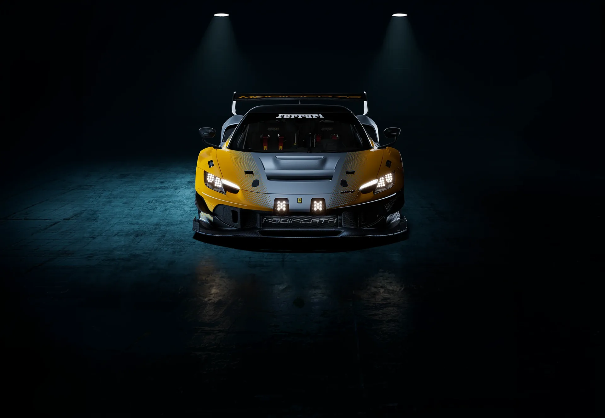

The most extreme model yet created for the Club Competizioni GT program
Track use only · Club Competizioni GT · Produced in exceptionally limited numbers


4The cabin
The cabin was developed around the driver while accommodating a passenger without compromising safety or functionality. Changes to the roll cage made it possible to install a second seat, complemented by a dedicated footrest and integrated intercom system.
The two-seat configuration allows a coach to accompany the driver and provide real-time feedback throughout each session. This makes the process of refining technique and improving performance more effective, while creating a shared and more rewarding track experience.